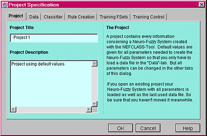

| Data Files | |
| NEFCLASS_J: The Tool | |
| NEFCLASS_J: The Philosophy | |
| The Project Specification Dialog | |
| Pruning the Rule Base | |
| Pruning Methods |
Also the linked files are only partly ready. But these informations can
also be found in the thesis.
There are two kind of data files:
| Training Data This file has to contain the patterns with class information from which the classifier is created. More information is given where the Data tab of the Project Specification Dialog is explained. |
|
| Application Data The classification process of the application data which consists of patterns with or without class information is started by the main menu entry 'Classifier|Clasify Application data'. The classification result is written into an ASCII file named 'result.log'. If class information is given error values are computed. Some statistics of the application data can be viewed by using the main menu entry View|Statistics Application Data.
|
| NEFCLASS_J: The Tool | |
| NEFCLASS-J: The Philosophy |
NEFCLASS-J is an interactive simulation software tool to develop a neuro-fuzzy classifier from a given data file. There are several other methods which are able to do this but the focus of the NEFCLASS model lies in the interpretability of the developed classifier. The constraints of the learning algorithm allow the user to interactively influence the training process.
So the main goal of NEFCLASS is to help the user to create a readable classifier that also provides an acceptable accuracy. However, the user has to be aware, that readability and accuracy do not go together. An interpretable fuzzy system should display the following features:
| few meaningful rules with few variables in their antecedents, | |
| few meaningful sets for each variable, | |
| there are no rule weights, | |
| identical linguistic terms are represented by identical fuzzy sets, | |
| only normal fuzzy sets are used, or even better fuzzy numbers or fuzzy intervals. |
NEFCLASS-J implements a neuro-fuzzy model based on a generic 3-layer fuzzy perceptron. It is a further development of NEFCLASS-PC but there are some more features and the graphic interface changed completely. It is adapted now to the graphic interfaces of Windows and Unix X-Terminals. In order to get a platform independent NEFCLASS-Tool the programing language is Java. So every computer using an operating system that supports a java interpreter is convenient.
The handling of the created NEFCLASS system is organized in projects. Whenever a stage of development is reached that should be saved, this can be done as a project. For the creation of a classifier the following steps have to be done:
| Parameters to define and constrain the classifiers have to be set. Some of them (e.g. learning rate, aggregation function, stop control, learning procedure) can be set without a data file to be opened. Others like number and type of fuzzy sets depend on the patterns. So the next step is to | |||||
| open a data file for training. After the definition of all parameters (default values are set) the | |||||
training of the classifier can be started
|
In every state it is possible to save the project. If a data file is loaded the file name is saved in the project so that it will be loaded automatically when the project is opened again. So be careful with moving your data files. If the classifier is just created additional to the project file a classifier file is saved. The project file is supposed to have the extension ‘.prj'. It contains the parameter definitions used to create the classifier. The classifier file is supposed to have the extension ‘.cls'. It contains the rule base and all other informations to describe the classifier. The user only needs to save the project and the files will be created automatically. These files are in ASCII code and can be viewed with any editor. It is possible to handle one project at a time only. So a project has to be closed before another one can be opened.
Furthermore it is possible to load a second data file which can used for testing the network or even classifying unknown data. It can be loaded by ‘Project|Open Application Data'. Although it is sortet into the Project menu it is not neatly connected to it. Another project can be loaded to classifiy this data. It is not saved with any project as it is done with the training data.
The data files cannot be closed explicitely. They are simply replaced when a new file is loaded. NEFCLASS will do a consistency check if the new data file fits the classifier. If not a message is given that the project must be closed and a new one has to be created. With closing the project the data files are also closed.
The handling of a project is controlled by the Project Specification Dialog which is opend when one of the following main menu entries is selected:
| Project|New envokes the dialog with default values. | |
| Project|Edit shows the parameter setting of the active classifier. | |
| Project|Open loads a project and envokes the dialog with the parameters of this classifier. |
In this dialog all parameters can be specified.
| Project Specification Dialog | |
| Pruning the Rule Base | |
| Pruning Methods |
In this dialog every parameter of the classifier can be specified.
This dialog is envoked by the following main menue entries:
| Project|New envokes the dialog with default values. | |
| Project|Edit shows the parameter setting of the active classifier. | |
| Project|Open loads a project and envokes the dialog with the parameters of this classifier. |
|  |
See also:
- The philosophy of NEFCLASS_J
- The color code
of the Project Specification Dialog
The tabs of this dialog name six categories of parameters describing a classifier. The tabs are devided into two parts. On the left the parameter settings can be done and on the right a short description of the certain parameter is given. The tabs are:
| Project | |
| Data | |
| Classifier | |
| Rule Creation | |
| Training Fuzzy Sets | |
| Training Control |
Pruning the rule base is used to improve the interpretability of the classifier. Pruning tries to get the same or a better classification results with a smaller rule base. There are three options to prune the rule base:
| Manual Pruning
For this open the rule editor. Every line for a rule has a number and the performance of the rule in the beginning. Use the values for the performance to find out which are the good rules. Then you have two possibilities:
With this you only can erase rules. Methods which also reduces the number of variables in a rule are used in the pruning option described next.
|
|||||
| |
Automatic Pruning Please note that the old rule base can be restored after the pruning process. But just in case it may be better to save the classifier under a new project name before starting to prune. There are four methods that are implemented for automatical pruning. These methods are automatically used one after the other. After a method is used the fuzzy sets are trained. For this the selected validation mode is used. If the resulting classifier produces a smaller number of misclassifications or a smaller error value than the former one, this new one is taken to be improved with the next pruning method. During this process all parameters you specified, except these concerning the rulebase, are used. See also: Learn the Rule Base and Train the Fuzzy Sets. There the windows are explained which will be opened to show a documentation of the process |
||||
| |
Semi-automatic Pruning This is not implemented yet. It is planed for the next version to offer the four pruning methods to the user. This way the sequence of using the methods is free to select. |
The learning algorithm of the NEFCLASS model provides good results for many classification problems. However, a good interpretation of the learning result cannot always be guaranteed, especially for high-dimensional problems. Because interpretation is one reason for using a fuzzy classifier in the first place, there is a need to enhance the learning algorithms of a neuro-fuzzy system with techniques for simplifying the obtained result [Nauck/Kruse 97]. Four pruning strategies are used to improve the interpretability of the classifier.
Delete linguisitc terms from the antecedent of a rule under certain aspects:
| A variable is not important for the classification.
The task is to find out if there is an input variable that is not necessary for the classification. For this the correlations of the input variables with the class information is used. Variables that have a low correlation are tested whether they can be deleted from the antecedet or not. Under a statistical view it is dubious to use the correlation, but it is only used to find out a sequence of testing the variables and is not used to delete a variable. The variable with the lowest correlation is the first to be tested. It is deleted from the antecedents of all rules, a consistency check of the rule base follows and the fuzzy sets are trained. If this improves the classification result this classifier is taken as the current one and the next variable with the lowest correlation is tested. If a test fails and no improvement was reached the last classifier that improved the classification result is the outcome of this pruning method. |
|
| |
A variable is not important for the degree of fulfilment of a rule. For each rule the linguistic term is identified whose membership degree is identical to the degree of fulfilment of the rule in the least number of cases. The rule with the smallest number is selected and the identified term is removed from its antecedent, and a consistency check is done. After this the fuzzy sets are trained and if the classifer can be improved it is kept and this pruning step is repeated. If the classifier cannot be improved the previous one is restored. The last classifier that improved the classification result is the outcome of this pruning method. |
| |
A term uses fuzzy set with a very large support If a variable is partitioned by more than two fuzzy sets, sometimes the support for one or more of them can become quite large during learning. This can be seen as evidence, that such a fuzzy set is superfluous. The fuzzy sets of every variable are sorted by their width. The term with the widest fuzzy set of all is deleted from all rules. Only in rules where it is the last term of the antecedent it is not deleted. A consistency check of the rule base follows and the fuzzy sets are trained. If this improves the classification result this classifier is taken as the current one and the fuzzy set with the next biggest width is examined. This process stops when the classification result is not improved anymore. The last classifier that improved the classification result is the outcome of this pruning method. |
Delete rules that never or very rarely provide the maximum degree of fulfilment for the class given by their consequent.
| All patterns are presented to the rules. For every rule it is counted how often the classification is correct and it produces the maximum degree of fulfilment for the correct class. The rule with the smallest number is deleted and the fuzzy sets are trained. If this improves the classification result this classifier is taken as the current one and the rule with the next lowest number is deleted. This process stops when a test fails and no improvement was reached or if no rule can be deleted because there is only one for each class. The last improved classifier is the result of this pruning method. |